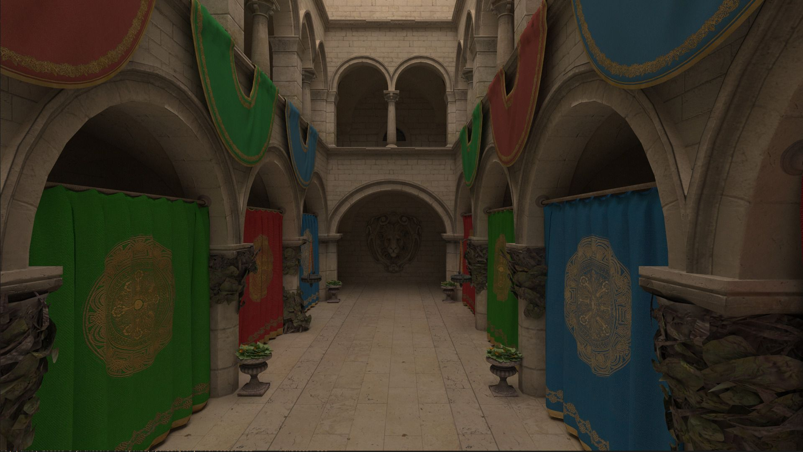
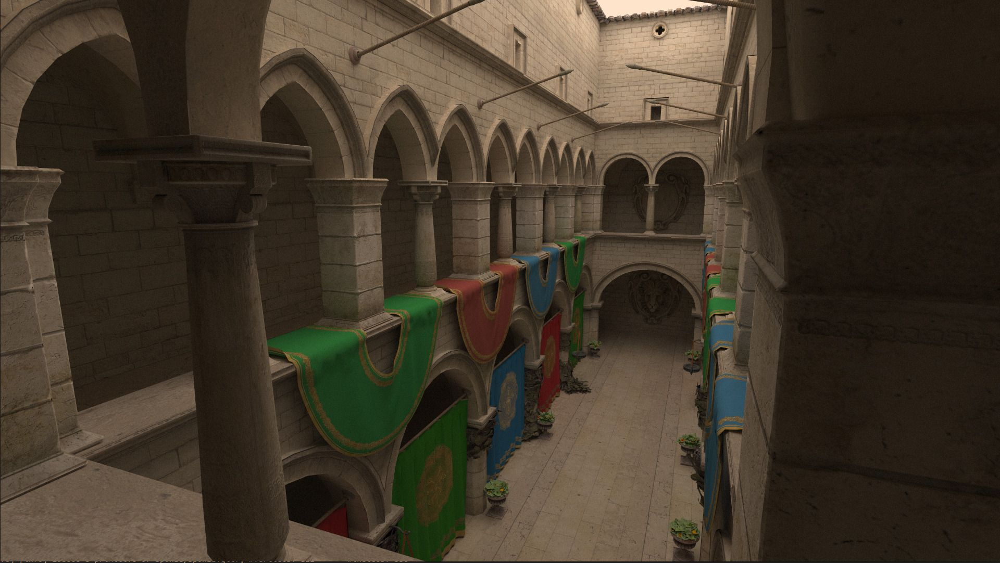
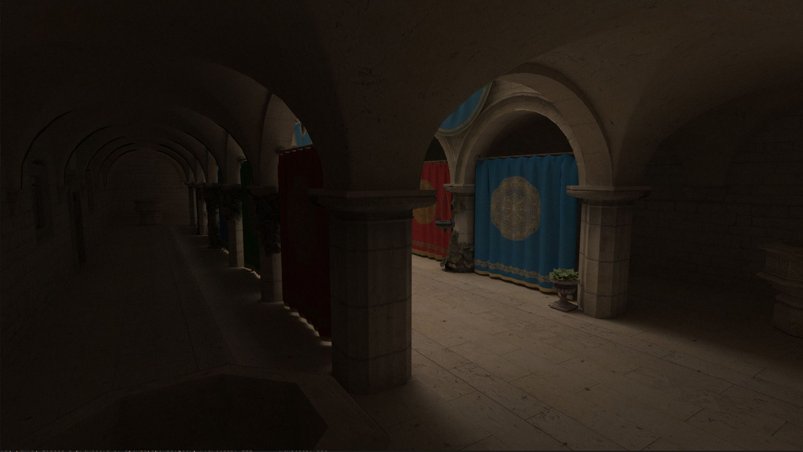
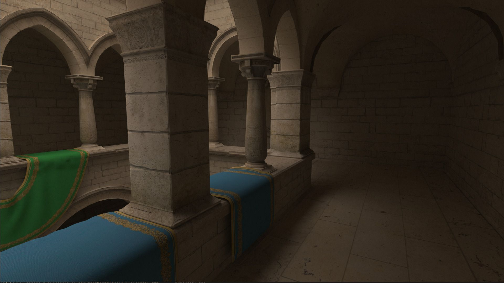

3d normals are 2.0000001d
New Gear
Last summer I decided it was time to buy a new laptop. Given how much time I spent using one I allocated a decent chunk of change. As should be clear from earlier posts, I also am very keen on feeding the GPU beast and making it sweat. One way to so: pathtracing. Recent developments in hardware accelerated raytracing did not go by me unnoticed and I could not wait to get my hands on one. As such, I settled on a laptop with a 3070; RTX enabled!
Vulkan RTX Extensions
In 2016 the Khronos Group released Vulkan 1.0, which would soon be followed by Vulkan 1.1 which featured extensions that exposes a raytracing API that utilized these hardware units. After many hours of learning and developing, with the undisputed aid of Sascha Willems, I was able to render the famous Crytek Sponza model with uncompromising global illumination. All this while achieving a healthy 200fps, requiring only about 10 seconds before convergence of a 1920x1080 framebuffer.




Packing Normals
In the raytracing pipeline there is initially limited information available about the surface with which a ray collides. Effectively,
we only get the gl_PrimitiveID variable, which refers to a triangle in the index buffer. We then need to fetch each vertex of triangle
and interpolate the normal and the texture using the barycentric intersection coordinates. Back in 2009, NVIDIA discovered
that an imperfect thread scheduling was the biggest bottleneck for raytracing performance. Even after just monkey patching it on the spot
using persistent threads, they correctly discovered that from that moment on raytracing is not a compute bound process, but memory bound
instead (paper). The main reason is the random memory
accesses patterns; Even neighbouring pixels may require different pieces of memory that are megabytes apart, completely thrashing the
caching mechanism.
Whilst there are techniques to increase memory access coherence, like ray sorting and packet tracing, it is my understanding that these techniques rarely pay off in a modern GPU setting. Furthermore, if they did I'm sure the driver vendors have implemented these techniques under the hood of their Vulkan implementation. What I might be able to improve upon however, is minimizing the size of a single Vertex. By fitting more vertices in a cacheline, we might ever so slightly improve cache utilization and consequently increase performance.
My initial Vertex struct looked liked the listing below.
struct Vertex {
glm::vec3 normal;
glm::vec2 uv;
}
struct Vertex {
glm::vec3 normal;
float __padding_normal;
glm::vec2 uv;
glm::vec2 __padding_uv;
}
struct Vertex {
glm::vec4 normal_uv;
}
0 10000010 11001001000011111100111
^ ^ ^
| | |
| | +--- mantissa = 0.7853975...
| |
| +------------------- exponent = 2 (130 - 128)
|
+------------------------- sign = 0 (positive)
{
glm::vec3 normal = //...;
glm::vec2 uv = //..
uint32_t* normal_x_as_uint = reinterpret_cast<uint32*>(&normal.x);
if (std::signbit(normal.z)) {
// negative, force the bit to one
*normal_x_as_uint |= 1;
} else {
// positive, force the bit to zero
*normal_x_as_uint &= ~1
}
return Vertex {
.normal_uv = glm::vec4(normal.x, normal.y, uv.x, uv.y);
}
}
Vertex v = vertices[some_index];
vec3 normal = vec3(v.normal_uv.xy, 0);
float sign = (floatBitsToInt(normal.x) & 1) == 1 ? -1.0f : 1.0f;
// because of rounding errors, the value in the sqrt may dip just below zero, yielding NaNs
// when we take the square root, therefore we clamp the value to 0.
normal.z = sign * sqrt(max(0, 1 - normal.x * normal.x - normal.y * normal.y));
Despite adding a few more compute operations to our shader, the reduced cache pressure due to a smaller Vertex type yielded a performance increase of 5%.